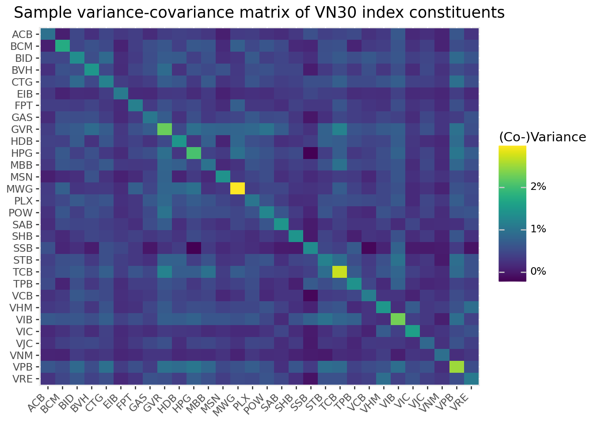

import pandas as pd
import numpy as np
import tidyfinance as tf
from plotnine import *
from mizani.formatters import percent_format
from adjustText import adjust_text3 Modern Portfolio Theory
In the previous chapter, we showed how to download and analyze stock market data with figures and summary statistics. Now, we turn to one of the most fundamental questions in finance: How should an investor allocate their wealth across assets that differ in expected returns, variance, and correlations to optimize their portfolio’s performance?
This question might seem straightforward at first glance. Why not simply invest everything in the asset with the highest expected return? The answer lies in a profound insight that transformed financial economics: risk matters, and it can be managed through diversification.
Modern Portfolio Theory (MPT), introduced by Markowitz (1952), revolutionized investment decision-making by formalizing the trade-off between risk and expected return. Before Markowitz, investors largely thought about risk on a security-by-security basis. Markowitz’s genius was recognizing that what matters is not the risk of individual securities in isolation, but how they contribute to the risk of the entire portfolio. This insight was so influential that it earned him the Sveriges Riksbank Prize in Economic Sciences in 1990 and laid the foundation for much of modern finance.
3.0.1 The Core Insight: Diversification as a Free Lunch
MPT relies on a crucial mathematical fact: portfolio risk depends not only on individual asset volatilities but also on the correlations between asset returns. This insight reveals the power of diversification—combining assets whose returns don’t move in perfect lockstep can reduce overall portfolio risk without necessarily sacrificing expected return.
Consider a simple analogy: Imagine you run a business selling both sunscreen and umbrellas. On sunny days, sunscreen sales boom but umbrella sales suffer; on rainy days, the reverse happens. By selling both products, your total revenue becomes more stable than if you sold only one. The “correlation” between sunscreen and umbrella sales is negative, and combining them reduces the variance of your overall income. This is precisely the logic behind portfolio diversification.
The fruit basket analogy offers another perspective: If all you have are apples and they spoil, you lose everything. With a variety of fruits, some may spoil, but others will stay fresh. Diversification provides insurance against the idiosyncratic risks of individual assets.
3.0.2 The Mean-Variance Framework
At the heart of MPT is mean-variance analysis, which evaluates portfolios based on two dimensions:
- Expected return (mean): The anticipated average profit from holding the portfolio
- Risk (variance): The dispersion of possible returns around the expected value
The key assumption is that investors care only about these two moments of the return distribution. This assumption is exactly correct if returns are normally distributed, or if investors have quadratic utility functions. Even when these conditions don’t hold precisely, mean-variance analysis often provides a good approximation to optimal portfolio choice.
By balancing expected return and risk, investors can construct portfolios that either maximize expected return for a given level of risk, or minimize risk for a desired level of expected return. In this chapter, we derive these optimal portfolio decisions analytically and implement the mean-variance approach computationally.
3.1 The Asset Universe: Setting Up the Problem
Suppose \(N\) different risky assets are available to the investor. Each asset \(i\) is characterized by:
- Expected return \(\mu_i\): The anticipated profit from holding the asset for one period
- Variance \(\sigma_i^2\): The dispersion of returns around the mean
- Covariances \(\sigma_{ij}\): The degree to which asset \(i\)’s returns move together with asset \(j\)’s returns
The investor chooses portfolio weights \(\omega_i\) for each asset \(i\). These weights represent the fraction of total wealth invested in each asset. We impose the constraint that weights sum to one:
\[ \sum_{i=1}^N \omega_i = 1 \]
This “budget constraint” ensures that the investor is fully invested—there is no outside option such as keeping money under a mattress. Note that we allow weights to be negative (short selling) or greater than one (leverage), though in practice these positions may face constraints.
3.1.1 The Two Stages of Portfolio Selection
According to Markowitz (1952), portfolio selection involves two distinct stages:
- Estimation: Forming expectations about future security performance based on observations, experience, and economic reasoning
- Optimization: Using these expectations to choose an optimal portfolio
In practice, these stages cannot be fully separated. The estimation stage determines the inputs (\(\mu\), \(\Sigma\)) that feed into the optimization stage. Poor estimation leads to poor portfolio choices, regardless of how sophisticated the optimization procedure.
To keep things conceptually clear, we focus primarily on the optimization stage in this chapter. We treat the expected returns and variance-covariance matrix as known, using historical data to compute reasonable proxies. In later chapters, we address the substantial challenges that arise from estimation uncertainty.
3.1.2 Loading and Preparing the Data
We work with the VN30 index constituents—the 30 largest and most liquid stocks on Vietnam’s Ho Chi Minh Stock Exchange. This provides a realistic asset universe for a domestic Vietnamese investor.
vn30_symbols = [
"ACB","BCM","BID","BVH","CTG","FPT","GAS","GVR","HDB","HPG",
"MBB","MSN","MWG","PLX","POW","SAB","SHB","SSB","STB","TCB",
"TPB","VCB","VHM","VIB","VIC","VJC","VNM","VPB","VRE","EIB"
]We load the historical price data:
import pandas as pd
from io import BytesIO
import datetime as dt
import os
import boto3
from botocore.client import Config
class ConnectMinio:
def __init__(self):
self.MINIO_ENDPOINT = os.environ["MINIO_ENDPOINT"]
self.MINIO_ACCESS_KEY = os.environ["MINIO_ACCESS_KEY"]
self.MINIO_SECRET_KEY = os.environ["MINIO_SECRET_KEY"]
self.REGION = os.getenv("MINIO_REGION", "us-east-1")
self.s3 = boto3.client(
"s3",
endpoint_url=self.MINIO_ENDPOINT,
aws_access_key_id=self.MINIO_ACCESS_KEY,
aws_secret_access_key=self.MINIO_SECRET_KEY,
region_name=self.REGION,
config=Config(signature_version="s3v4"),
)
def test_connection(self):
resp = self.s3.list_buckets()
print("Connected. Buckets:")
for b in resp.get("Buckets", []):
print(" -", b["Name"])
conn = ConnectMinio()
s3 = conn.s3
conn.test_connection()
bucket_name = os.environ["MINIO_BUCKET"]
prices = pd.read_csv(
BytesIO(
s3.get_object(
Bucket=bucket_name,
Key="historycal_price/dataset_historical_price.csv"
)["Body"].read()
),
low_memory=False
)
prices["date"] = pd.to_datetime(prices["date"])
prices["adjusted_close"] = prices["close_price"] * prices["adj_ratio"]
prices = prices.rename(columns={
"vol_total": "volume",
"open_price": "open",
"low_price": "low",
"high_price": "high",
"close_price": "close"
})
prices = prices.sort_values(["symbol", "date"])Connected. Buckets:
- dsteam-data
- rawbctcWe filter to keep only the VN30 constituents:
prices_daily = prices[prices["symbol"].isin(vn30_symbols)]
prices_daily[["date", "symbol", "adjusted_close"]].head(3)| date | symbol | adjusted_close | |
|---|---|---|---|
| 18176 | 2010-01-04 | ACB | 329.408244 |
| 18177 | 2010-01-05 | ACB | 329.408244 |
| 18178 | 2010-01-06 | ACB | 320.258015 |
3.1.3 Computing Expected Returns
The sample mean return serves as our proxy for expected returns. For each asset \(i\), we compute:
\[ \hat{\mu}_i = \frac{1}{T} \sum_{t=1}^{T} r_{i,t} \]
where \(r_{i,t}\) is the return of asset \(i\) in period \(t\), and \(T\) is the total number of periods.
Why monthly returns? While daily data provides more observations, monthly returns offer several advantages for portfolio optimization. First, monthly returns are less noisy and exhibit weaker serial correlation. Second, monthly rebalancing is more realistic for most investors, avoiding excessive transaction costs. Third, the estimation error in mean returns is already substantial—using daily data doesn’t materially improve the precision of mean estimates because the mean return scales with the horizon while estimation error scales with the square root of observations.
returns_monthly = (prices_daily
.assign(
date=prices_daily["date"].dt.to_period("M").dt.to_timestamp()
)
.groupby(["symbol", "date"], as_index=False)
.agg(adjusted_close=("adjusted_close", "last"))
.assign(
ret=lambda x: x.groupby("symbol")["adjusted_close"].pct_change()
)
)3.1.4 Computing Volatilities
Individual asset risk in MPT is quantified using variance (\(\sigma^2_i\)) or its square root, the standard deviation or volatility (\(\sigma_i\)). We use the sample standard deviation as our proxy:
\[ \hat{\sigma}_i = \sqrt{\frac{1}{T-1} \sum_{t=1}^{T} (r_{i,t} - \hat{\mu}_i)^2} \]
Alternative risk measures exist, including Value-at-Risk, Expected Shortfall, and higher-order moments such as skewness and kurtosis. However, variance remains the workhorse measure in portfolio theory because of its mathematical tractability and the central role of the normal distribution in finance.
assets = (returns_monthly
.groupby("symbol", as_index=False)
.agg(
mu=("ret", "mean"),
sigma=("ret", "std")
)
)3.1.5 Visualizing the Risk-Return Trade-off
Figure 3.1 displays each asset’s expected return (vertical axis) against its volatility (horizontal axis). This “mean-standard deviation” space is fundamental to portfolio theory.
assets_figure = (
ggplot(
assets,
aes(x="sigma", y="mu", label="symbol")
)
+ geom_point()
+ geom_text(adjust_text={"arrowprops": {"arrowstyle": "-"}})
+ scale_x_continuous(labels=percent_format())
+ scale_y_continuous(labels=percent_format())
+ labs(
x="Volatility (Standard Deviation)",
y="Expected Return",
title="Expected returns and volatilities of VN30 index constituents"
)
)
assets_figure.show()
Several observations emerge from this figure. First, there is substantial heterogeneity in both expected returns and volatilities across stocks. Second, the relationship between risk and return is far from linear. Some high-volatility stocks have low or even negative expected returns. Third, most individual stocks appear to offer poor risk-return trade-offs. As we will see, portfolios can substantially improve upon these individual positions.
3.2 The Variance-Covariance Matrix: Capturing Asset Interactions
3.2.1 Why Correlations Matter
A key innovation of MPT is recognizing that portfolio risk depends critically on how assets move together. The variance-covariance matrix \(\Sigma\) captures all pairwise interactions between asset returns.
To understand why correlations matter, consider the variance of a two-asset portfolio: \[\sigma_p^2 = \omega_1^2\sigma_1^2 + \omega_2^2\sigma_2^2 + 2\omega_1\omega_2\sigma_{12}\]
The third term involves the covariance \(\sigma_{12} = \rho_{12}\sigma_1\sigma_2\), where \(\rho_{12}\) is the correlation coefficient. When \(\rho_{12} < 1\), the portfolio variance is less than the weighted average of individual variances. When \(\rho_{12} < 0\), the diversification benefit is even more pronounced.
This mathematical fact has profound implications: You can reduce risk without reducing expected return by combining assets that don’t move perfectly together. This is sometimes called the “only free lunch in finance.”
3.2.2 Computing the Variance-Covariance Matrix
We compute the sample covariance matrix as: \[\hat{\sigma}_{ij} = \frac{1}{T-1} \sum_{t=1}^{T} (r_{i,t} - \hat{\mu}_i)(r_{j,t} - \hat{\mu}_j)\]
First, we reshape the returns data into a wide format with assets as columns:
returns_wide = (returns_monthly
.pivot(index="date", columns="symbol", values="ret")
.reset_index()
)
sigma = (returns_wide
.drop(columns=["date"])
.cov()
)3.2.3 Interpreting the Variance-Covariance Matrix
The diagonal elements of \(\Sigma\) are the variances of individual assets. The off-diagonal elements are covariances, which can be positive (assets tend to move together), negative (assets tend to move in opposite directions), or zero (no linear relationship).
For easier interpretation, we often convert covariances to correlations: \[\rho_{ij} = \frac{\sigma_{ij}}{\sigma_i \sigma_j}\]
Correlations are bounded between -1 and +1, making them easier to compare across asset pairs.
Figure 3.2 visualizes the variance-covariance matrix as a heatmap.
sigma_long = (sigma
.reset_index()
.melt(id_vars="symbol", var_name="symbol_b", value_name="value")
)
sigma_long["symbol_b"] = pd.Categorical(
sigma_long["symbol_b"],
categories=sigma_long["symbol_b"].unique()[::-1],
ordered=True
)
sigma_figure = (
ggplot(
sigma_long,
aes(x="symbol", y="symbol_b", fill="value")
)
+ geom_tile()
+ labs(
x="", y="", fill="(Co-)Variance",
title="Sample variance-covariance matrix of VN30 index constituents"
)
+ scale_fill_continuous(labels=percent_format())
+ theme(axis_text_x=element_text(angle=45, hjust=1))
)
sigma_figure.show()

The heatmap reveals important patterns. The diagonal (variances) shows which stocks are most volatile. The off-diagonal patterns show which pairs of stocks tend to move together. In general, stocks within the same sector tend to have higher correlations with each other than with stocks from different sectors.
3.3 The Minimum-Variance Portfolio
3.3.1 Motivation: Risk Minimization as a Benchmark
Before considering expected returns, let’s find the portfolio that minimizes risk entirely. This minimum-variance portfolio (MVP) serves as an important benchmark and reference point. It represents what an extremely risk-averse investor—one who cares only about minimizing volatility—would choose.
3.3.2 The Optimization Problem
The minimum-variance investor solves: \[ \min_{\omega} \omega^{\prime}\Sigma\omega \]
subject to the constraint that weights sum to one:
\[ \omega^{\prime}\iota = 1 \]
where \(\iota\) is an \(N \times 1\) vector of ones.
In words: minimize portfolio variance, subject to being fully invested.
3.3.3 The Analytical Solution
This is a classic constrained optimization problem that can be solved using Lagrange multipliers. The Lagrangian is:
\[ \mathcal{L} = \omega^{\prime}\Sigma\omega - \lambda(\omega^{\prime}\iota - 1) \]
Taking the first-order condition with respect to \(\omega\): \[ \frac{\partial \mathcal{L}}{\partial \omega} = 2\Sigma\omega - \lambda\iota = 0 \]
Solving for \(\omega\): \[ \omega = \frac{\lambda}{2}\Sigma^{-1}\iota \]
Using the constraint \(\omega^{\prime}\iota = 1\) to solve for \(\lambda\): \[ \frac{\lambda}{2}\iota^{\prime}\Sigma^{-1}\iota = 1 \implies \frac{\lambda}{2} = \frac{1}{\iota^{\prime}\Sigma^{-1}\iota} \]
Substituting back: \[ \omega_{\text{mvp}} = \frac{\Sigma^{-1}\iota}{\iota^{\prime}\Sigma^{-1}\iota} \]
This elegant formula shows that the minimum-variance weights depend only on the covariance matrix—expected returns play no role. The inverse covariance matrix \(\Sigma^{-1}\) determines how much to invest in each asset based on its variance and its covariances with all other assets.
3.3.4 Implementation
iota = np.ones(sigma.shape[0])
sigma_inv = np.linalg.inv(sigma.values)
omega_mvp = (sigma_inv @ iota) / (iota @ sigma_inv @ iota)3.3.5 Visualizing the Minimum-Variance Weights
Figure 3.3 displays the portfolio weights of the minimum-variance portfolio.
assets = assets.assign(omega_mvp=omega_mvp)
assets["symbol"] = pd.Categorical(
assets["symbol"],
categories=assets.sort_values("omega_mvp")["symbol"],
ordered=True
)
omega_figure = (
ggplot(
assets,
aes(y="omega_mvp", x="symbol", fill="omega_mvp>0")
)
+ geom_col()
+ coord_flip()
+ scale_y_continuous(labels=percent_format())
+ labs(
x="",
y="Portfolio Weight",
title="Minimum-variance portfolio weights"
)
+ theme(legend_position="none")
)
omega_figure.show()
Several features of the minimum-variance portfolio are noteworthy. First, many stocks receive zero or near-zero weights. Second, some stocks receive negative weights (short positions). These short positions are not a computational artifact, they reflect the optimizer’s attempt to exploit correlations for risk reduction. Third, the weights are quite extreme (both large positive and large negative), which often indicates estimation error amplification, which is a topic we address in later chapters.
3.3.6 Portfolio Performance
Let’s compute the expected return and volatility of the minimum-variance portfolio:
mu = assets["mu"].values
mu_mvp = omega_mvp @ mu
sigma_mvp = np.sqrt(omega_mvp @ sigma.values @ omega_mvp)
summary_mvp = pd.DataFrame({
"mu": [mu_mvp],
"sigma": [sigma_mvp],
"type": ["Minimum-Variance Portfolio"]
})
summary_mvp| mu | sigma | type | |
|---|---|---|---|
| 0 | -0.011424 | 0.043512 | Minimum-Variance Portfolio |
mu_mvp_fmt = f"{mu_mvp:.4f}"
sigma_mvp_fmt = f"{sigma_mvp:.4f}"
print(f"The MVP return is {mu_mvp_fmt} and volatility is {sigma_mvp_fmt}.")The MVP return is -0.0114 and volatility is 0.0435.If the expected return is negative, this is not a computational error. The minimum-variance portfolio minimizes risk without regard to expected returns. Because some assets in the sample have negative average returns, the risk-minimizing combination may inherit a negative expected return. This highlights a fundamental limitation of using historical sample means as estimates of expected returns: they are extremely noisy, and can lead to economically unintuitive results even when the optimization mathematics are working correctly.
3.4 Efficient Portfolios: Balancing Risk and Return
3.4.1 The Investor’s Trade-off
In most cases, minimizing variance is not the investor’s sole objective. A more realistic formulation allows the investor to trade off risk against expected return. The investor might be willing to accept higher portfolio variance in exchange for higher expected returns.
An efficient portfolio minimizes variance subject to earning at least some target expected return \(\bar{\mu}\). Formally:
\[\min_{\omega} \omega^{\prime}\Sigma\omega\]
subject to: \[\omega^{\prime}\iota = 1 \quad \text{(fully invested)}\] \[\omega^{\prime}\mu \geq \bar{\mu} \quad \text{(minimum return)}\]
When \(\bar{\mu}\) exceeds the expected return of the minimum-variance portfolio, the investor accepts more risk to earn more return.
3.4.2 Setting the Target Return
For illustration, suppose the investor wants to earn at least the historical average return of the best-performing stock:
mu_bar = assets["mu"].max()
print(f"Target expected return: {mu_bar:.5f}")Target expected return: 0.01886This is an ambitious target—it means matching the return of the single highest-returning stock while benefiting from diversification to reduce risk.
3.4.3 The Analytical Solution
The constrained optimization problem with an inequality constraint on expected returns can be solved using the Karush-Kuhn-Tucker (KKT) conditions. At the optimum (assuming the return constraint binds), the solution is:
\[\omega_{\text{efp}} = \frac{\lambda^*}{2}\left(\Sigma^{-1}\mu - \frac{D}{C}\Sigma^{-1}\iota\right)\]
where:
- \(C = \iota^{\prime}\Sigma^{-1}\iota\) (a scalar measuring the “size” of the inverse covariance matrix)
- \(D = \iota^{\prime}\Sigma^{-1}\mu\) (capturing the interaction between expected returns and the inverse covariance matrix)
- \(E = \mu^{\prime}\Sigma^{-1}\mu\) (measuring the “signal” in expected returns weighted by inverse covariances)
- \(\lambda^* = 2\frac{\bar{\mu} - D/C}{E - D^2/C}\) (the shadow price of the return constraint)
Alternatively, we can express the efficient portfolio as a linear combination of the minimum-variance portfolio and an “excess return” portfolio:
\[\omega_{\text{efp}} = \omega_{\text{mvp}} + \frac{\lambda^*}{2}\left(\Sigma^{-1}\mu - D \cdot \omega_{\text{mvp}}\right)\]
This representation reveals important intuition: the efficient portfolio starts from the minimum-variance portfolio and tilts toward higher-expected-return assets, with the tilt magnitude determined by \(\lambda^*\).
3.4.4 Implementation
C = iota @ sigma_inv @ iota
D = iota @ sigma_inv @ mu
E = mu @ sigma_inv @ mu
lambda_tilde = 2 * (mu_bar - D / C) / (E - (D ** 2) / C)
omega_efp = omega_mvp + (lambda_tilde / 2) * (sigma_inv @ mu - D * omega_mvp)
mu_efp = omega_efp @ mu
sigma_efp = np.sqrt(omega_efp @ sigma.values @ omega_efp)
summary_efp = pd.DataFrame({
"mu": [mu_efp],
"sigma": [sigma_efp],
"type": ["Efficient Portfolio"]
})3.4.5 Comparing the Portfolios
Figure 3.4 plots both portfolios alongside the individual assets.
summaries = pd.concat(
[assets, summary_mvp, summary_efp], ignore_index=True
)
summaries_figure = (
ggplot(
summaries,
aes(x="sigma", y="mu")
)
+ geom_point(data=summaries.query("type.isna()"))
+ geom_point(data=summaries.query("type.notna()"), color="#F21A00", size=3)
+ geom_label(aes(label="type"), adjust_text={"arrowprops": {"arrowstyle": "-"}})
+ scale_x_continuous(labels=percent_format())
+ scale_y_continuous(labels=percent_format())
+ labs(
x="Volatility (Standard Deviation)",
y="Expected Return",
title="Efficient & minimum-variance portfolios"
)
)
summaries_figure.show()
The figure demonstrates the substantial diversification benefits of portfolio optimization. The efficient portfolio achieves the same expected return as the highest-returning individual stock but with substantially lower volatility. This “free lunch” from diversification is the central insight of Modern Portfolio Theory.
3.4.6 The Role of Risk Aversion
The target return \(\bar{\mu}\) implicitly reflects the investor’s risk aversion. Less risk-averse investors choose higher \(\bar{\mu}\), accepting more variance to earn more expected return. More risk-averse investors choose \(\bar{\mu}\) closer to the minimum-variance portfolio’s expected return.
Equivalently, the mean-variance framework can be derived from the optimal decisions of an investor with a mean-variance utility function: \[U(\omega) = \omega^{\prime}\mu - \frac{\gamma}{2}\omega^{\prime}\Sigma\omega\]
where \(\gamma\) is the coefficient of relative risk aversion. The Appendix shows there is a one-to-one mapping between \(\gamma\) and \(\bar{\mu}\), so both formulations yield identical efficient portfolios.
3.6 Key Takeaways
This chapter introduced the concepts of Modern Portfolio Theory. The main insights are:
Portfolio risk depends on correlations: The variance of a portfolio is not simply the weighted average of individual variances. Covariances between assets play a crucial role, creating opportunities for diversification.
Diversification is the “only free lunch” in finance: By combining assets that don’t move perfectly together, investors can reduce risk without sacrificing expected return. This insight is the cornerstone of modern investment practice.
The minimum-variance portfolio minimizes risk: This portfolio depends only on the covariance matrix and serves as an important benchmark. It represents the least risky way to be fully invested in risky assets.
Efficient portfolios balance risk and return: By accepting more variance, investors can earn higher expected returns. Efficient portfolios are those that offer the best possible trade-off.
The efficient frontier characterizes optimal portfolios: This boundary in mean-standard deviation space represents the menu of optimal choices available to mean-variance investors.
Two-fund separation simplifies implementation: Any efficient portfolio can be constructed from any two distinct efficient portfolios, reducing the computational burden of portfolio optimization.
Looking ahead, several important complications arise in practice. First, the inputs to portfolio optimization (expected returns and covariances) must be estimated from data, and estimation error can dramatically affect portfolio performance. Second, real-world constraints such as transaction costs, short-sale restrictions, and position limits modify the optimization problem. Third, the assumption that investors care only about mean and variance may be too restrictive when returns are non-normal or when investors have more complex preferences. We address these extensions in subsequent chapters.